Alexander Savchuk
Military veteran
Finding ways to apply your skills in civilian life. Prejudiced attitude on the part of employers
Inclusive AI-Driven
In Ukraine, millions of people — veterans, people with disabilities, IDPs, mothers returning to work face structural barriers to employment.
I helped design ATJ: an inclusive hiring platform that embeds fairness into the product's foundation not as a feature, but as the architecture itself.
Impact:
65
Pains points
10
In-depth interviews
6
Customer Journey Maps
16
Core User flows
CONTEXT
A Ukrainian organization building an ecosystem to connect inclusive employers with diverse candidates. What existed before: educational content, DEI audits, webinars, corporate training. What didn't exist: a product that could scale this mission.
My role in team:
User interviews; Jobs Catalog page; Job Card component; Presentation to stakeholders.RESEARCH:
I didn't study users, I listened to people. Before opening Figma — I conducted and documented interviews with people from vulnerable groups. The market moved faster than the tools. DEI culture is becoming a critical necessity for Ukraine's workforce.
Veterans Unemployment Rate
1.3M+
30%+ unemployed
Unemployment Among IDPs
5M
15% unemployed
Employment Rate of People with Disabilities
15–18%
are employed (vs. up to 50% in Europe).
Nationwide Talent Shortage
75%
of employers face a constant workforce shortage.
Nationwide Talent Shortage
27%
of people over 50 are employed.
Nationwide Talent Shortage
56%
of unemployed IDPs are women
Unemployment by Personal Choice
4%
of non-working people say it's by choice
The insight changed everything
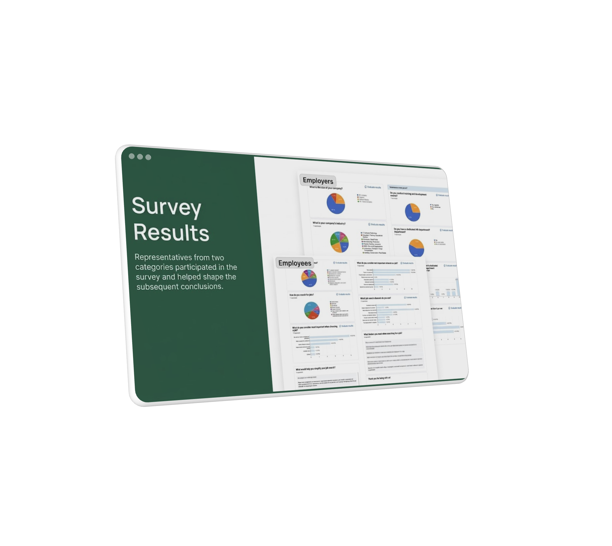
Standard platforms expect employers to become inclusive on their own.
Candidates with specific needs must open every job to check accessibility conditions.
The issue is not bad intent. It's that the system doesn't make inclusion visible before first contact.
Solution: make inclusion structural, embedded into every touchpoint, not an optional add-on.
Alexander Savchuk
Military veteran
Finding ways to apply your skills in civilian life. Prejudiced attitude on the part of employers
Kateryna Lubarska
Mom after maternity leave
Lack of flexible offers on the market. Discrimination and prejudice against mothers
Anna Dubinska
Person with a disability
Research workplace accessibility needs. Employer distrust or condescension
OVERALL SCOPE OF WORK:
A large team effort went into this project. What's shown here
covers only a small part of my own contribution
explore the fuller scope via
the link below.
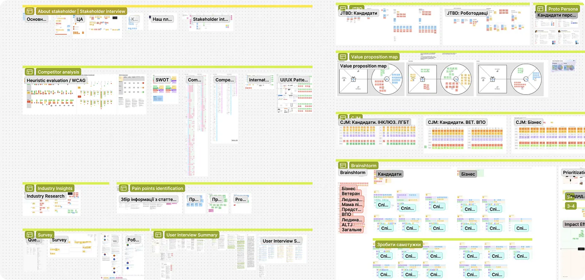
Pattern I saw:
The problem is not a lack of candidates or willing employers. The problem is the structure of interaction — biased at every step before first contact. This insight changed everything. Inclusion cannot be a feature. It must be architecture.
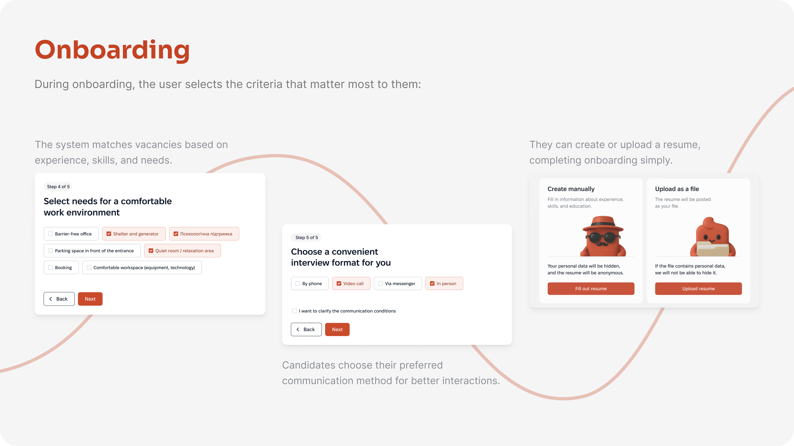
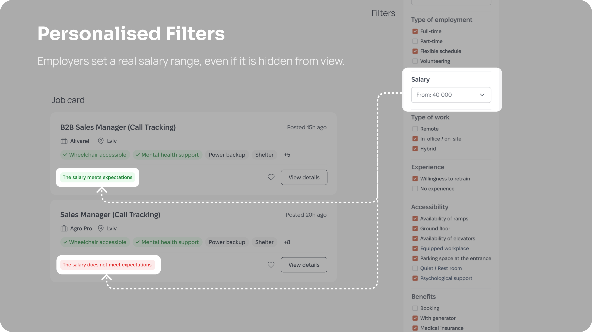
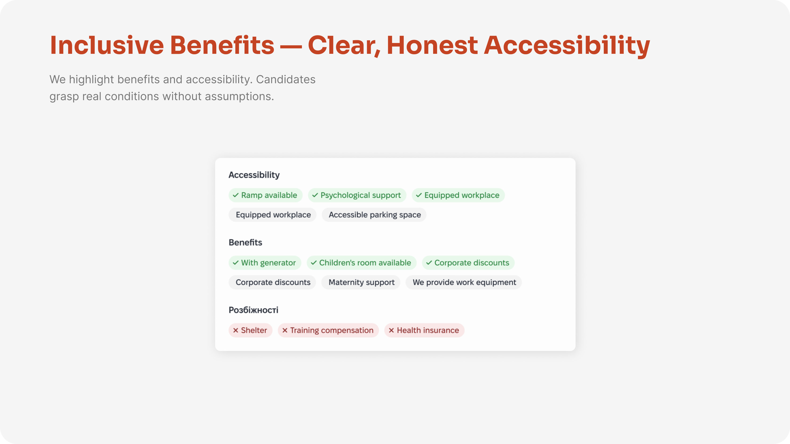
My contribution:
This was my main area of responsibility — the central search experience where all product decisions come together.
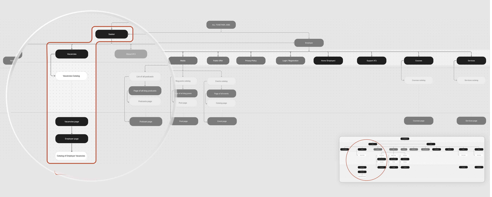
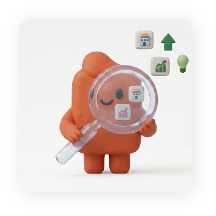
Primary Focus:
Managed the Jobs Catalog the core search experience where all product decisions converge.
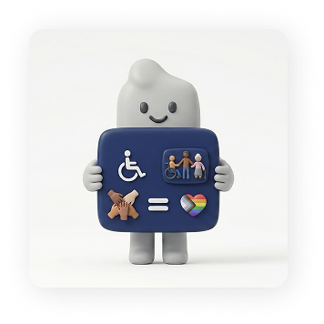
Accessibility Tags:
Tags are placed directly on the job cards rather than hidden, helping candidates quickly narrow down to relevant ones.
Dynamic Card:
Cards instantly adapt to user context, acting as a micro feedback surface without requiring extra navigation.
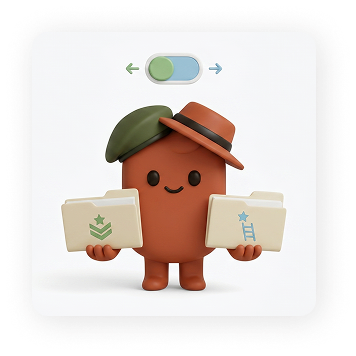
CV Selector:
Candidates can switch CV versions during the application, accommodating varied profiles like career changers and veterans.
The Jobs page serves as a central search hub, where smart algorithms, accessibility filters, and transparent job cards collaborate to create an environment of equal opportunities. The filtering system enables job search not only by skills but also by environmental conditions.
Users can tailor the search to their physical and mental needs. A personalization option is also available: when enabled, filters automatically adjust based on the candidate's profile and CV data.
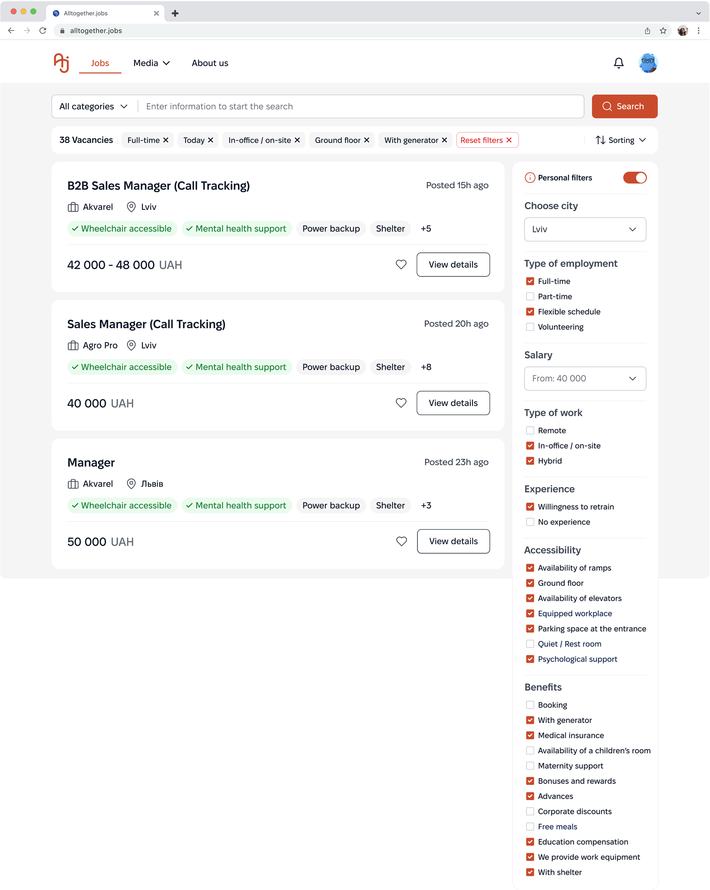
The Problem:
Standard filters are typically limited to salary, location, and basic professional criteria. People with disabilities or specific needs often have to manually review hundreds of vacancies to find ones that offer features such as ramps, shelters, or other required conditions.
The Solution:
A detailed sidebar with Accessibility and Well-being categories turns specific needs (such as "Quiet office" or "Barrier-free access") into primary search criteria, effectively filtering out irrelevant job offers.
Educational Context:
The filters also serve an educational purpose: expanded categories help candidates discover inclusive options they may not have known about or felt comfortable asking for.
Job Card
The card is designed so candidates can instantly grasp the
essentials:
The role, inclusivity match level, accessibility options,
benefits, and financial compensation.
Default
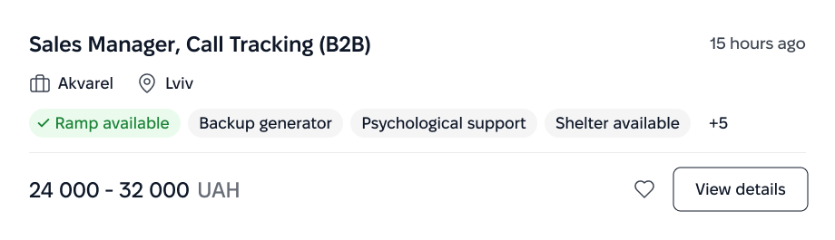
Consideration
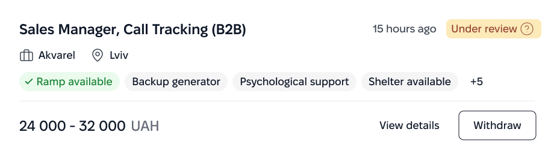
Suggestion
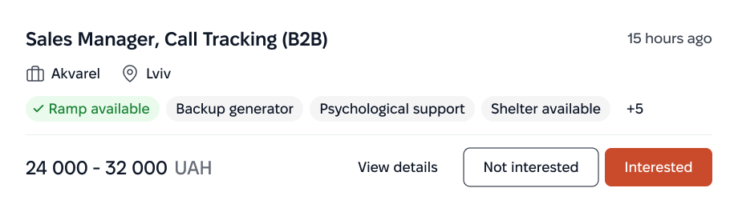
Unlogged
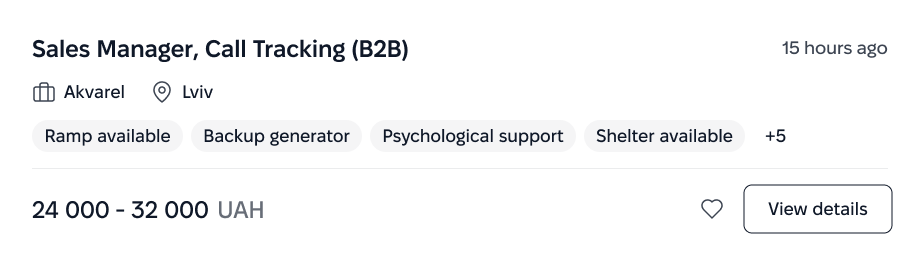
Unlogged (expanded)
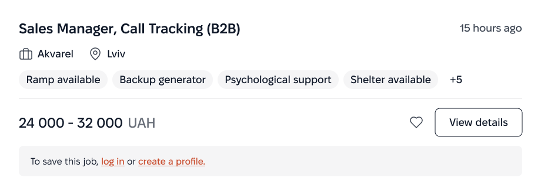
Unavailable
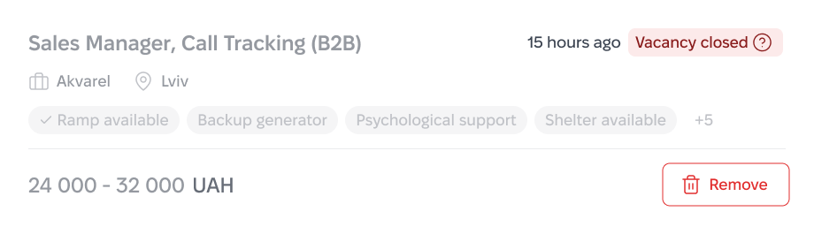
Saved
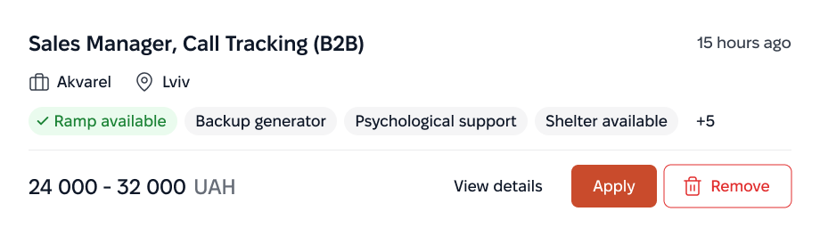
Default
Consideration
Suggestion
Unlogged
Unlogged (expanded)
Unavailable
Saved
The Problem:
Standard job cards are often "silent" about accessibility conditions. Candidates are forced to open each vacancy and read long descriptions to find out whether a ramp or a quiet space is available, wasting time on irrelevant offers.
The Solution:
Accessibility Tags are placed at the top level as mandatory attributes. Combined with transparent salary and work format, this allows candidates to evaluate a job without extra clicks.
Dynamic States:
The cards are adaptive and visualize interaction status (such as "Applied" or "Interview"), giving users immediate feedback on their application progress.
Create CV at Onboarding
Your personal data will be hidden, and the resume will be anonymous. This isn't fine print at the bottom. It's the very first thing a candidate sees when creating their profile.
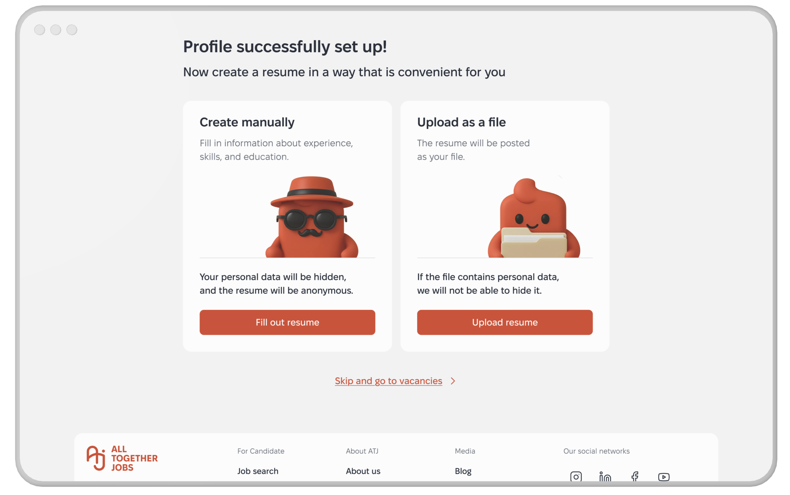
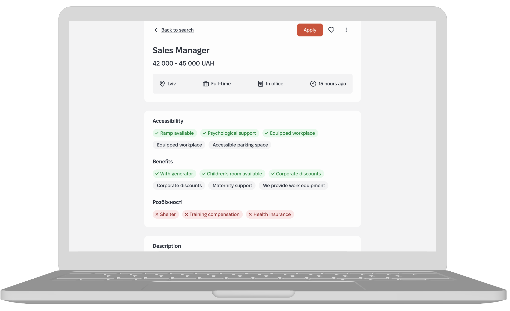
Job Page with Accessibility Tags First
Know before you click. Decide before you apply. Accessibility features aren't hidden in a dropdown, buried in the description, or tucked away below the fold. They are front and center on the first screen.
CV Selector
Apply with the right version of you. The candidate chooses which resume version to submit—Sales Manager or Accountant version. No "one size fits all" here
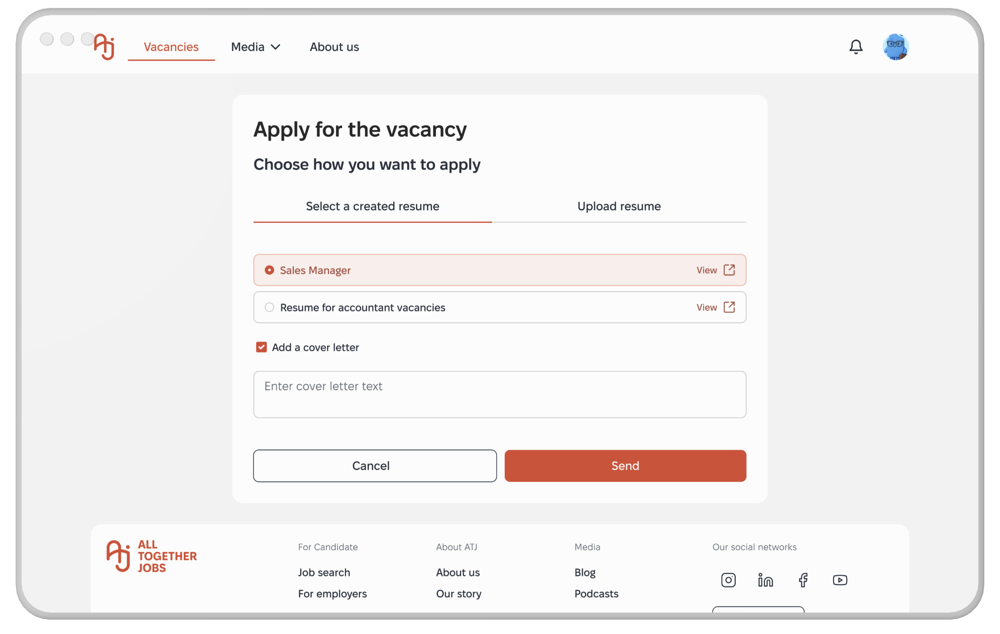
Design System / AI usage
I built this design system myself, based on the Atlassian Design System, chosen specifically for its strong accessibility foundation. Accessibility was checked manually and through Figma plugins, covering color contrast, typography and readability, and other accessibility parameters.
The system is structured methodically: tokens → atomic components → components, with a consistent naming convention and clear rules for extending it.
AI in the process. The large audit's clickable prototype was assembled through Figma Make (an AI tool) based on an approved wireflow and existing design-system components. AI did not generate the interface from scratch, I used it to assemble and arrange already-designed screens into a clickable prototype.
For prototyping, I used Figma Prototype and, in select cases, Figma Make. Before handing the Job Cards over to development, I refactored the design system with Claude Code — cleaning up structure and consistency ahead of the handoff, not generating it from scratch.
Foundation - Link
Components - Link
Results
What we delivered wasn't a set of screens. It was a hiring system where fairness is structural — built into every filter, every card, every touchpoint. Ready for development. Ready to scale. Ready to matter.
There's also a Medium article covering the collaborative work in more detail.
Open for complex challenges and leadership roles. Select time to call and Hire Me below.
Book a Call